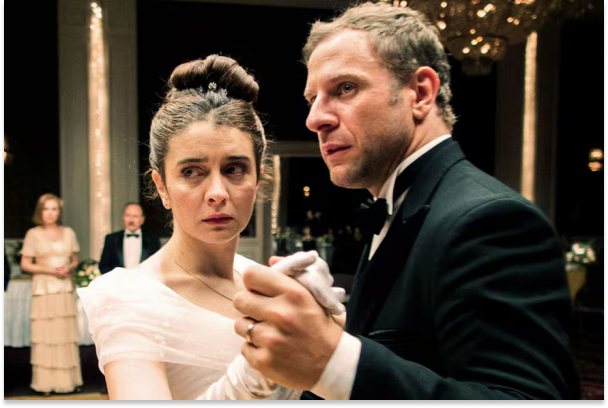
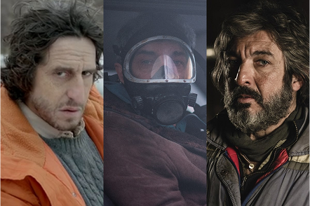
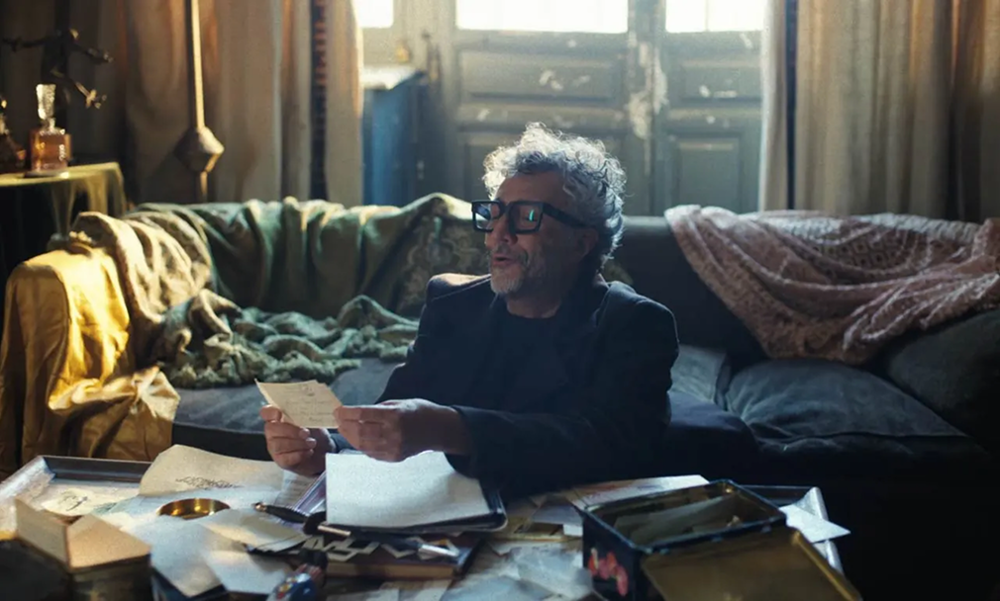

Día del Cine Argentino: cuáles son las películas nacionales más taquilleras de la historia
Nieve en Buenos Aires: 5 películas y series argentinas que transcurren durante una nevada
Celebrando junio, el mes del Orgullo: 3 documentales esenciales para ver en Max
Según tus gustos:
Fito Páez lanza su primer libro de poesía.
Mientras ajusta los detalles para su nueva gira española, el artista rosarino anuncia la publicación de su primer libro de poemas en un video junto a la editora Julia Toboda y el diseñador Max Rompo

Música